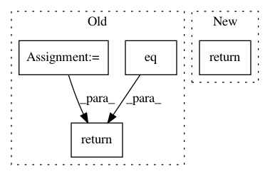

5b648ef909fbf89c53f28ebc1b3bd2f4fde168c5,torch/onnx/symbolic_opset9.py,,embedding,#Any#Any#Any#Any#Any#Any#,475
Before Change
// auto out = weight.index_select(0, indices.reshape(-1));
// zerofill_padding(out);
// return out.view(size);
weight = g.op("Gather", weight, indices)
if (padding_idx >= 0):
mask = eq(g, indices, g.op("Constant", value_t=torch.tensor(padding_idx)))
if sym_help._export_onnx_opset_version < 11:
mask = unsqueeze(g, mask, -1)
else:
mask = sym_help._unsqueeze_helper(g, mask, [-1])
weight = masked_fill(g, weight, mask, torch.tensor(0.))
return weight
@parse_args("v", "v", "v", "i", "i", "i", "v", "i")
def embedding_bag(g,
After Change
def embedding(g, weight, indices, padding_idx, scale_grad_by_freq, sparse):
return g.op("Gather", weight, indices)
@parse_args("v", "v", "v", "i", "i", "i", "v", "i")
def embedding_bag(g,
In pattern: SUPERPATTERN
Frequency: 4
Non-data size: 4
Instances
Project Name: pytorch/pytorch
Commit Name: 5b648ef909fbf89c53f28ebc1b3bd2f4fde168c5
Time: 2021-03-12
Author: nshulga@fb.com
File Name: torch/onnx/symbolic_opset9.py
Class Name:
Method Name: embedding
Project Name: rodluger/starry
Commit Name: b5ebc7710a0524c30a5f982267d30aa32d1b5a0b
Time: 2019-06-20
Author: rodluger@gmail.com
File Name: starry/ops/ops.py
Class Name: Ops
Method Name: align
Project Name: rusty1s/pytorch_geometric
Commit Name: 776f891afa3e7bfe2ae456c064e0867c4987c762
Time: 2020-06-30
Author: matthias.fey@tu-dortmund.de
File Name: examples/rgcn.py
Class Name:
Method Name: test
Project Name: NeuromorphicProcessorProject/snn_toolbox
Commit Name: 74cbc5f9153113a4a08a389e7d604f55a2647b1b
Time: 2017-04-21
Author: bodo.rueckauer@gmail.com
File Name: snntoolbox/core/inisim.py
Class Name:
Method Name: get_new_thresh